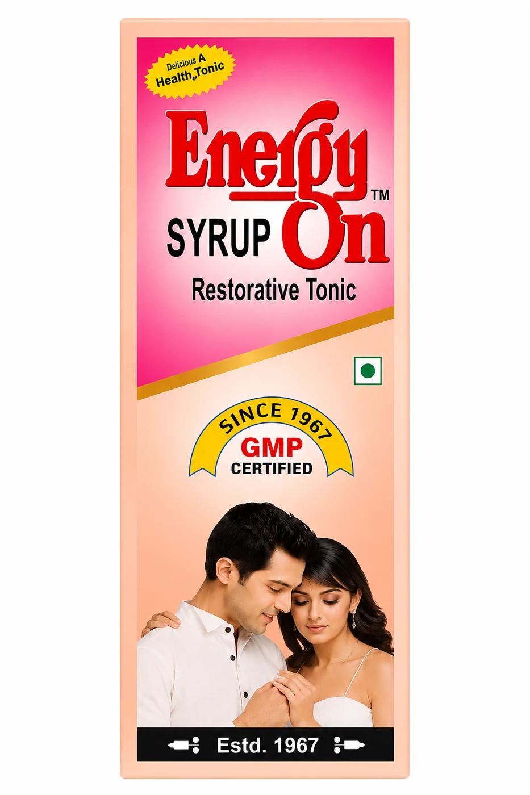
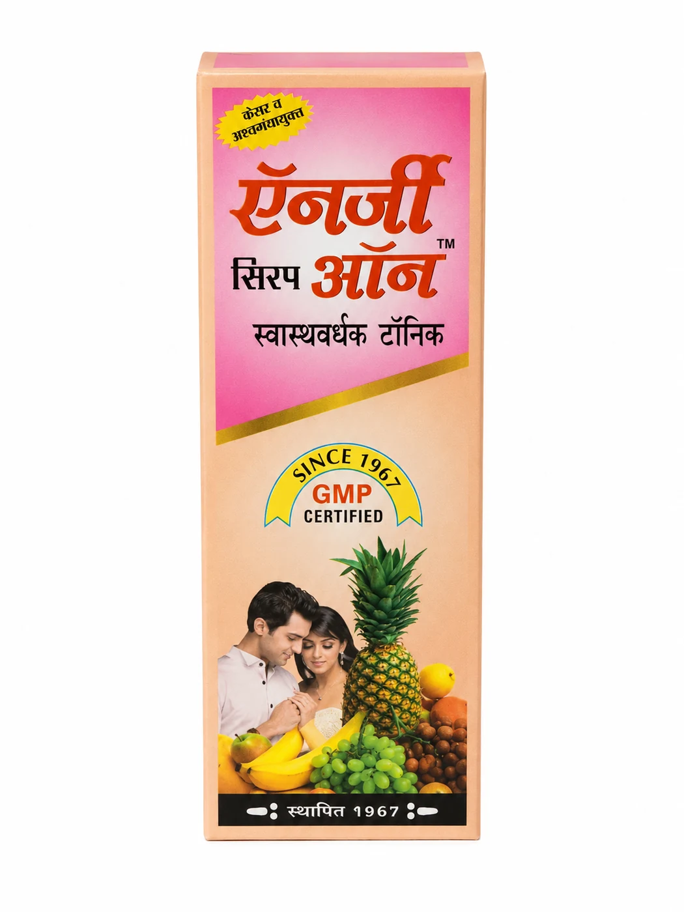
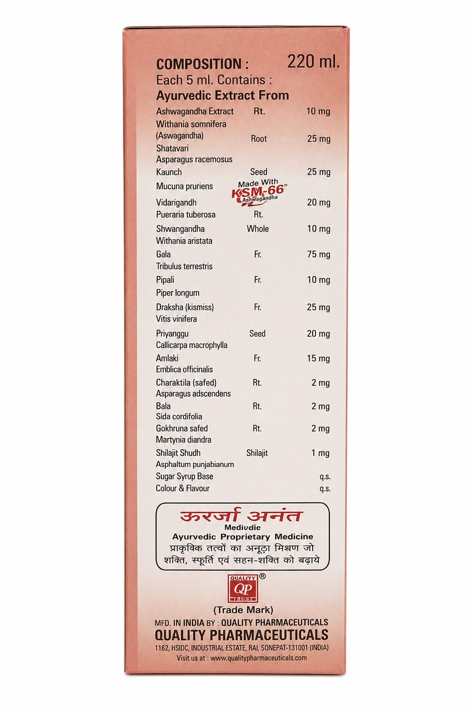
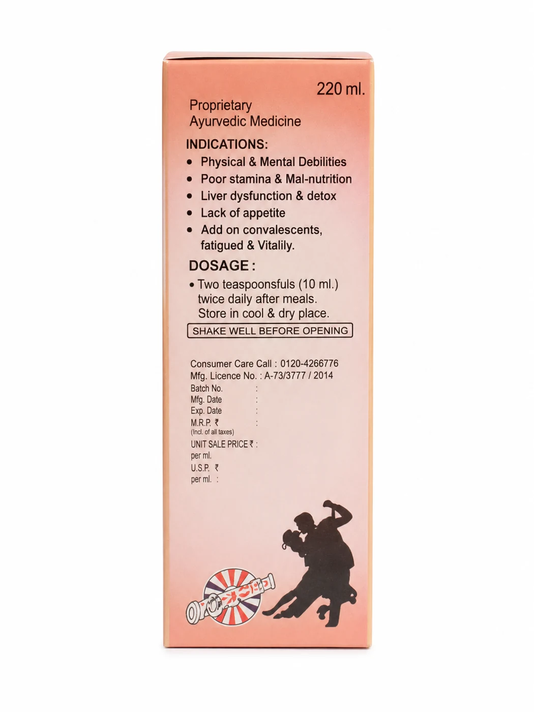
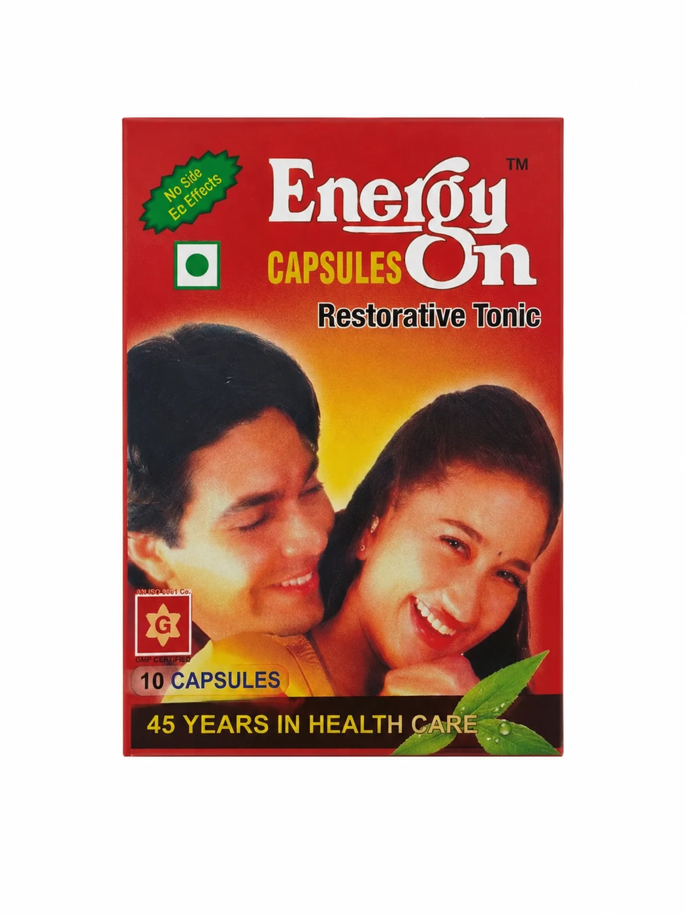
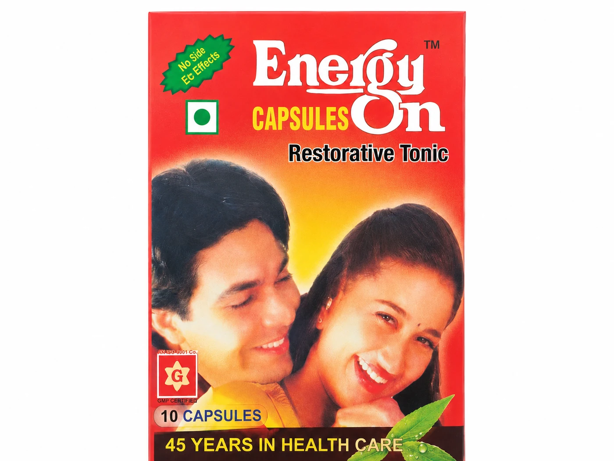

Suitable forAll ages - children and adults






Tonics & Wellness
Energyon
EnergyOn Syrup is a proprietary Ayurvedic restorative tonic designed to support overall physical and mental well-being. Formulated with Ashwagandha, Shatavari, Kesar (Saffron), and Amla, this syrup is indicated for addressing poor stamina, malnutrition, and lack of appetite.
Suggested doseTwo teaspoons (10 mL) twice daily after meals.
Packing & MRP
| Pack | MRP |
|---|---|
| 100ML Syrup | ₹100 |
| 200ML Syrup | ₹140 |
| 10CAPS | ₹150 |
Availability and pack selection can be confirmed with our team.
Product information
Indications & expected results
Presented consistently from the available product literature.
Indications
- Physical and mental weakness with poor staminaशारीरिक और मानसिक कमजोरी, कम स्टैमिना और थकान
- Malnutrition and poor appetiteकुपोषण और भूख न लगना
- Liver dysfunction and detox supportलिवर की खराबी और डिटॉक्स सहायता
- Fatigue and convalescenceथकान और बीमारी से उबरना
Results
- Improves energy and stamina
- Supports recovery
- Boosts vitality
Product information is provided for awareness and enquiry. Use as directed on the label or by a qualified healthcare professional.
Ayurvedic formulation
Ingredients
Ingredient names and botanical details where available.

Ashwagandha Root (Withania somnifera)
Ashwagandha root is known for its adaptogenic and rejuvenating properties.

Shatawari Root (Asparagus racemosus)
Shatawari root supports vitality, hormonal balance, and overall wellness.

Kavach Seed (Mucuna pruriens)
Kavach seed supports strength, stamina, and nervous system health.

Vidarikand Root (Pueraria tuberosa)
Vidarikand root supports energy, physical strength, and immunity.

Shankhpushpi Herb (Convolvulus pluricaulis)
Shankhpushpi supports memory, focus, and mental wellness.

Brahmi Booti (Bacopa monnieri)
Brahmi supports memory, concentration, and nervous system wellness.

Amla Fruit (Phyllanthus emblica)
Amla is rich in antioxidants and Vitamin C, supporting immunity and digestion.

Punarnava Root (Boerhavia diffusa)
Punarnava root supports kidney health, digestion, and overall body wellness.

Arjuna Bark (Terminalia arjuna)
Arjuna bark supports heart health, circulation, and overall vitality.
Continue exploring